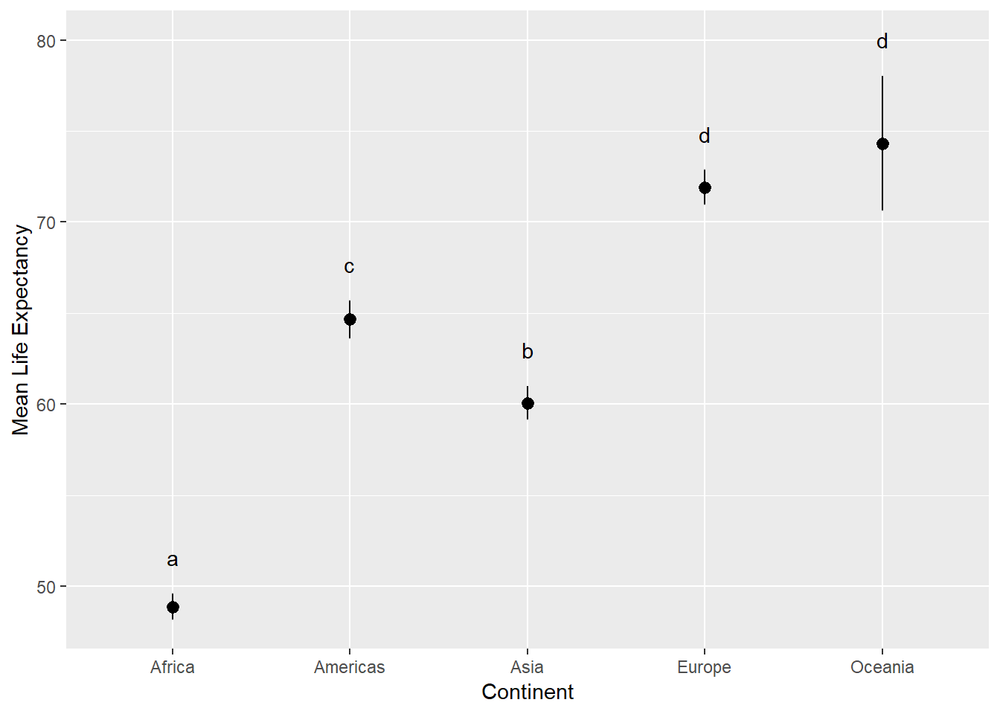
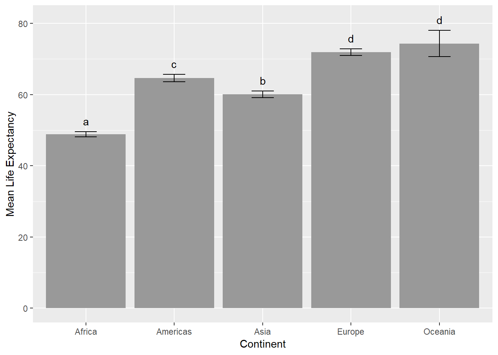
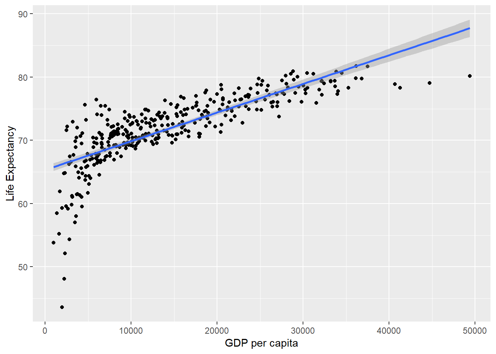

As we saw yesterday regular expressions can save you a lot of time, if you put some effort into understanding how they work. They certainly look intimidating at first but you get used to it. For today we keep on working with regular expressions a bit more because I found a great R Studio Addin that helps you understanding them and get a taste for what is possible! The package is currently only available on GitHub. In order to download packages from GitHub you first need to download the devtools package. Once you have downloaded it, you can install packages straight from GitHub. The package we will using is called regexplain and can be found here. Have a look at the README file. To install the package run:
Now you will have REGEXPLAIN in your Addins drop down menu (below the Tools menu). Another great resource for testing your regular expressions is this website: https://regex101.com/
I also wanted to share with you the regex example I showed you yesterday. Instead of sending or downloading CSV files, you could also read out the data frame you are working with using the dput() function. Then you can simply copy/paste the output into an email and send it to your collaborator for example. This also very helpful when you ask a question on those QA sites such as StackOverflow as they always want a reproducible example but at the same time will not download any files on there own computers. Once you share the dput() output, the recipient can simply copy/paste it into their own R console and recreate your data frame that way. Below I did the same. Simply copy/paste those two blocks of code into your console and you have those data sets ready.
require(tidyverse)
d1 <- structure(list(Treatment = structure(1:3, .Label = c("a", "b",
"c"), class = "factor"), Height_7days = c(0.241756922, 0.017613771,
0.913951358), Height.14days = c(0.557475118, 0.115967094, 0.276483941
), Height21days = c(0.882937228, 0.664116205, 0.110760574), Weight_7days = c(0.014404525,
0.591611048, 0.365071975), Weight..14days = c(0.365071975, 0.46561814,
0.943144072), Weight_21days = c(0.420476422, 0.86572502, 0.911250316
)), class = "data.frame", row.names = c(NA, -3L))
d2 <- structure(list(Treatment = c("a", "b", "c"), Height_7days = c(0.241756922,
0.017613771, 0.913951358), `Height 14days` = c(0.557475118, 0.115967094,
0.276483941), Height21days = c(0.882937228, 0.664116205, 0.110760574
), Weight_7days = c(0.014404525, 0.591611048, 0.365071975), `Weight 14days` = c(0.365071975,
0.46561814, 0.943144072), Weight_21days = c(0.420476422, 0.86572502,
0.911250316)), class = c("spec_tbl_df", "tbl_df", "tbl", "data.frame"
), row.names = c(NA, -3L), spec = structure(list(cols = list(
Treatment = structure(list(), class = c("collector_character",
"collector")), Height_7days = structure(list(), class = c("collector_double",
"collector")), `Height 14days` = structure(list(), class = c("collector_double",
"collector")), Height21days = structure(list(), class = c("collector_double",
"collector")), Weight_7days = structure(list(), class = c("collector_double",
"collector")), `Weight 14days` = structure(list(), class = c("collector_double",
"collector")), Weight_21days = structure(list(), class = c("collector_double",
"collector"))), default = structure(list(), class = c("collector_guess",
"collector")), skip = 1), class = "col_spec"))
d1
#> Treatment Height_7days Height.14days Height21days Weight_7days
#> 1 a 0.24175692 0.5574751 0.8829372 0.01440452
#> 2 b 0.01761377 0.1159671 0.6641162 0.59161105
#> 3 c 0.91395136 0.2764839 0.1107606 0.36507197
#> Weight..14days Weight_21days
#> 1 0.3650720 0.4204764
#> 2 0.4656181 0.8657250
#> 3 0.9431441 0.9112503
d2
#> # A tibble: 3 x 7
#> Treatment Height_7days `Height 14days` Height21days Weight_7days
#> <chr> <dbl> <dbl> <dbl> <dbl>
#> 1 a 0.242 0.557 0.883 0.0144
#> 2 b 0.0176 0.116 0.664 0.592
#> 3 c 0.914 0.276 0.111 0.365
#> # ... with 2 more variables: `Weight 14days` <dbl>, Weight_21days <dbl>
# the regex below in the extract() function is universal enough to match both scenarios (read.csv and read_csv)
# there are also shorthand versions of this regex but I use this one as it is more clear to me
# this is where I got the idea from: https://stackoverflow.com/questions/25925556/gather-multiple-sets-of-columns
# see also ?regex
# run each line individually to see what the function are doing
d1 %>% gather(key = "key", value = "value", - Treatment) %>%
extract(key, c("parameter", "Days"), "([[:alpha:]]+)[[:space:][:punct:]]*([[:digit:]]+)") %>%
spread(parameter, value)
#> Treatment Days Height Weight
#> 1 a 14 0.55747512 0.36507197
#> 2 a 21 0.88293723 0.42047642
#> 3 a 7 0.24175692 0.01440452
#> 4 b 14 0.11596709 0.46561814
#> 5 b 21 0.66411621 0.86572502
#> 6 b 7 0.01761377 0.59161105
#> 7 c 14 0.27648394 0.94314407
#> 8 c 21 0.11076057 0.91125032
#> 9 c 7 0.91395136 0.36507197
d2 %>% gather(key = "key", value = "value", - Treatment) %>%
extract(key, c("parameter", "Days"), "([[:alpha:]]+)[[:space:][:punct:]]*([[:digit:]]+)") %>%
spread(parameter, value)
#> # A tibble: 9 x 4
#> Treatment Days Height Weight
#> <chr> <chr> <dbl> <dbl>
#> 1 a 14 0.557 0.365
#> 2 a 21 0.883 0.420
#> 3 a 7 0.242 0.0144
#> 4 b 14 0.116 0.466
#> 5 b 21 0.664 0.866
#> 6 b 7 0.0176 0.592
#> 7 c 14 0.276 0.943
#> 8 c 21 0.111 0.911
#> 9 c 7 0.914 0.365Alright for today, I want to share another great data set with you. You can find it in the gapminder package:
To change things up a bit let’s watch a quick movie about this data set: https://www.youtube.com/watch?v=jbkSRLYSojo
The gapminder data set is a subset of the data presented in the video. Now, it’s your turn again! Take the data set and turn it upside down.
m1 <- aov(lifeExp ~ continent, data = gapminder)
summary(m1) # Significant continent effect
#> Df Sum Sq Mean Sq F value Pr(>F)
#> continent 4 139343 34836 408.7 <2e-16 ***
#> Residuals 1699 144805 85
#> ---
#> Signif. codes: 0 '***' 0.001 '**' 0.01 '*' 0.05 '.' 0.1 ' ' 1
# emmeans package great for doing posthoc comparisons
require(emmeans)
#> Loading required package: emmeans
(mean_comparisons <- emmeans(m1, "continent"))
#> continent emmean SE df lower.CL upper.CL
#> Africa 48.9 0.370 1699 48.1 49.6
#> Americas 64.7 0.533 1699 63.6 65.7
#> Asia 60.1 0.464 1699 59.2 61.0
#> Europe 71.9 0.487 1699 70.9 72.9
#> Oceania 74.3 1.884 1699 70.6 78.0
#>
#> Confidence level used: 0.95
(tukey_comparisons <- CLD(mean_comparisons, Letters = letters))
#> continent emmean SE df lower.CL upper.CL .group
#> Africa 48.9 0.370 1699 48.1 49.6 a
#> Asia 60.1 0.464 1699 59.2 61.0 b
#> Americas 64.7 0.533 1699 63.6 65.7 c
#> Europe 71.9 0.487 1699 70.9 72.9 d
#> Oceania 74.3 1.884 1699 70.6 78.0 d
#>
#> Confidence level used: 0.95
#> P value adjustment: tukey method for comparing a family of 5 estimates
#> significance level used: alpha = 0.05
tukey_comparisons$.group2 <- trimws(tukey_comparisons$.group)
ggplot(tukey_comparisons, aes(x = continent, y = emmean)) +
geom_pointrange(aes(ymin = lower.CL, ymax = upper.CL)) +
geom_text(aes(x = continent, y = upper.CL + 2, label = .group2)) +
labs(x = "Continent", y = "Mean Life Expectancy")
ggplot(tukey_comparisons, aes(x = continent, y = emmean)) +
geom_col(fill = "grey60") +
geom_errorbar(aes(ymin = lower.CL, ymax = upper.CL), width = 0.25) +
geom_text(aes(x = continent, y = upper.CL + 3, label = .group2)) +
labs(x = "Continent", y = "Mean Life Expectancy")
gapminder %>%
filter(continent == "Europe") -> europe
m2 <- lm(lifeExp ~ gdpPercap, europe)
m2 # lifeExp = 65.34 + 4.535*10^-4 * gdpPercap
#>
#> Call:
#> lm(formula = lifeExp ~ gdpPercap, data = europe)
#>
#> Coefficients:
#> (Intercept) gdpPercap
#> 6.534e+01 4.535e-04
summary(m2)
#>
#> Call:
#> lm(formula = lifeExp ~ gdpPercap, data = europe)
#>
#> Residuals:
#> Min 1Q Median 3Q Max
#> -22.6504 -1.2783 0.1333 2.0302 8.3884
#>
#> Coefficients:
#> Estimate Std. Error t value Pr(>|t|)
#> (Intercept) 6.534e+01 3.303e-01 197.82 <2e-16 ***
#> gdpPercap 4.534e-04 1.918e-05 23.64 <2e-16 ***
#> ---
#> Signif. codes: 0 '***' 0.001 '**' 0.01 '*' 0.05 '.' 0.1 ' ' 1
#>
#> Residual standard error: 3.399 on 358 degrees of freedom
#> Multiple R-squared: 0.6096, Adjusted R-squared: 0.6085
#> F-statistic: 559.1 on 1 and 358 DF, p-value: < 2.2e-16
new_data <- tibble(gdpPercap = c(20000, 30000, 40000, 50000))
new_data
#> # A tibble: 4 x 1
#> gdpPercap
#> <dbl>
#> 1 20000
#> 2 30000
#> 3 40000
#> 4 50000
predict(m2, new_data, interval = "prediction")
#> fit lwr upr
#> 1 74.41151 67.71368 81.10934
#> 2 78.94602 72.22587 85.66618
#> 3 83.48053 76.71706 90.24401
#> 4 88.01505 81.18767 94.84243
ggplot(europe, aes(gdpPercap, lifeExp)) +
geom_point() +
geom_smooth(method = "lm") +
labs(x = "GDP per capita", y = "Life Expectancy")